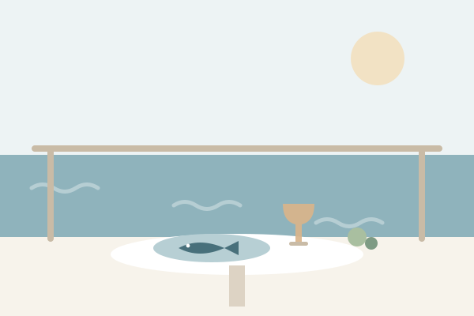
Restaurant Burin
Fresh fish & seasonal plates
Restaurant Burin
Excellent fresh food. Ask for the catch of the day.
Dr. Ivana Kostrenčića 10a
Crikvenica
Complete privacy in the greenery, minutes from the sea. Crikvenica gives you both without asking you to choose.
Quiet enough to hear the forest, close enough to stroll to dinner.
Distances
Hover or tap a destination to see how close it really is.
From the doorstep
Hiking trails lead straight from the villa into the green hills. The most famous is the Path of Love, which passes ancient Roman ruins on its way to panoramic views over the Kvarner bay and its islands.
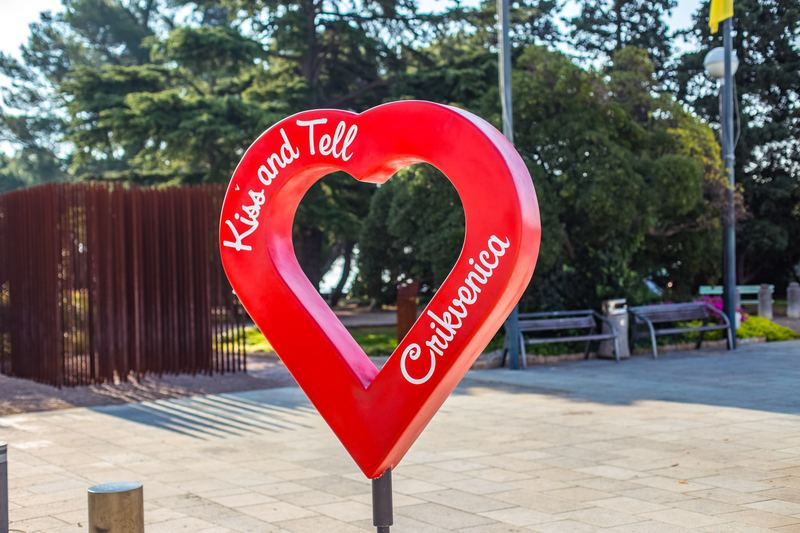
Eat well
Hover or tap a card for the address and why we love it.

Fresh fish & seasonal plates
Excellent fresh food. Ask for the catch of the day.
Dr. Ivana Kostrenčića 10a
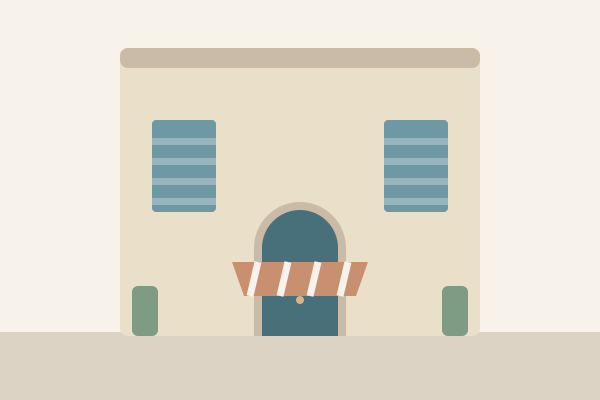
A town-centre classic
A restaurant with a long tradition, right in the centre of town.
Strossmayer street 10
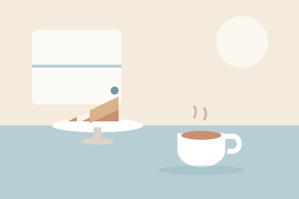
Cakes & coffee
Cakes and sweets the locals queue for. The perfect afternoon break.
Frankopanska 2
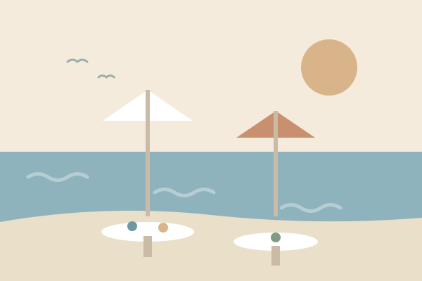
Luxury on the sand
A luxury restaurant right on the sandy beach in Dramalj, well worth the five-minute drive.
Braće Car 23, Dramalj
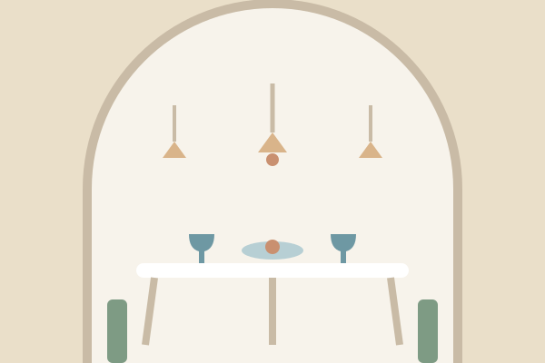
Old-town favourite
An old city-centre restaurant with consistently great food.
Frankopanska 35
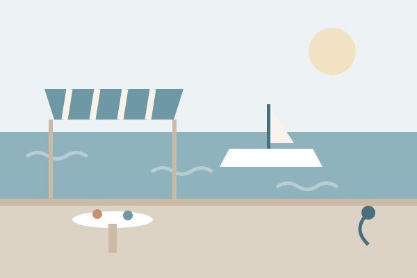
A local institution
One of the most famous restaurants in town. Book a table in season.
Strossmayerovo 4
The card images are illustrations rather than photographs. Crikvenica is best seen in person.
Swim
Six favourites within a short drive, from town sand to hidden coves.
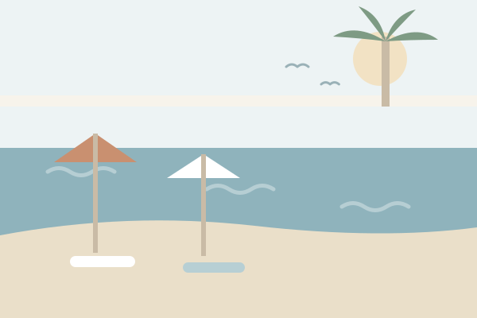
Sandy & central
A beautiful sandy beach in the heart of Crikvenica, with the promenade right behind it.
Crikvenica
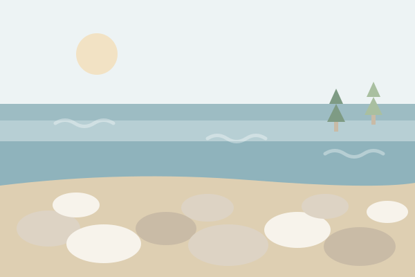
Clear water, smooth pebbles
Crystal-clear water over smooth pebbles. Bring the snorkel.
Crikvenica
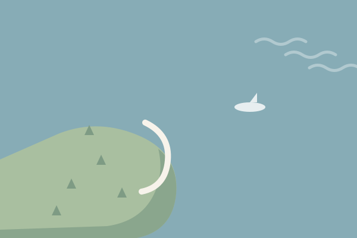
A peninsula to yourself
An old peninsula surrounded by crystal-clear water on every side.
Dramalj
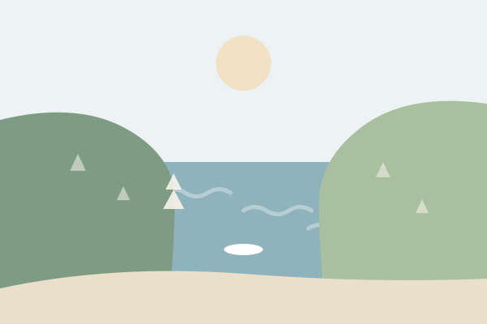
A scenic bay in Selce
A scenic, sheltered bay in nearby Selce with calm water and big views.
Selce
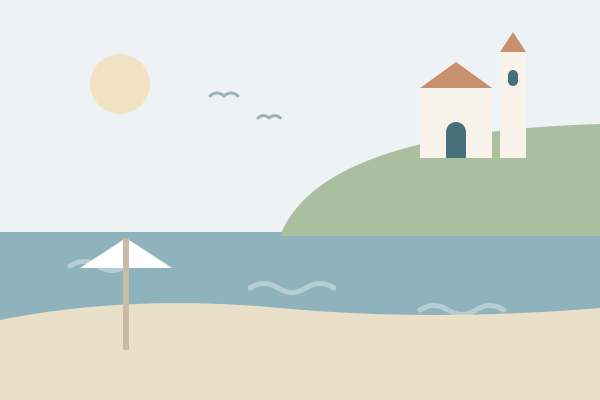
Below the old church
A popular beach beneath an ancient church, and Crikvenica’s postcard motif.
Crikvenica
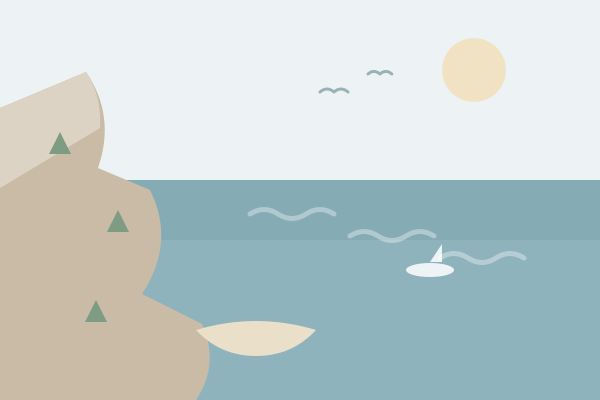
Wild & breathtaking
A breathtaking stretch of coastline near Novi Vinodolski, made for explorers.
Novi Vinodolski
The card images are illustrations rather than photographs. Crikvenica is best seen in person.
On the map
Plan your stay
Send us your dates and we will reply personally within 24 hours.